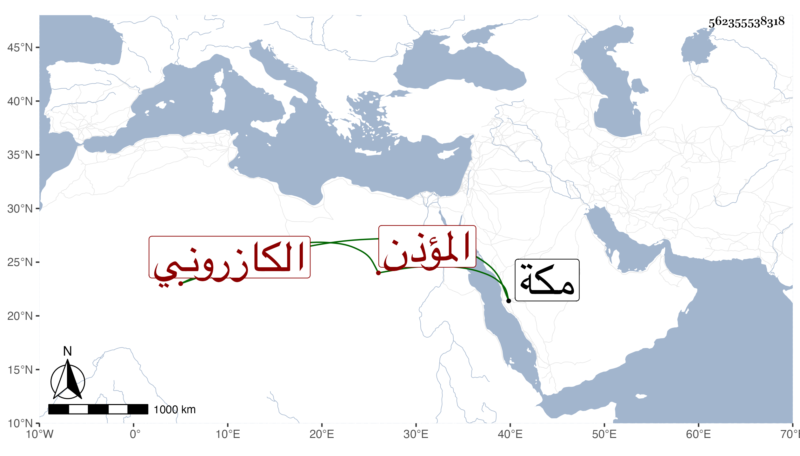

0902Sakhawi.DawLamic.ITO20230111-ara1.EIS1600.562355538318
Biography ID: 562355538318
886
عبد اللطيف بن أحمد بن عبد السلام بن عبد الله بن علي بن محمد ابن عبد السلام بن أبي المعالي بن أبي الخير بن ذاكر بن أحمد بن الحسين بن شهريار الكازروني المؤذن بالمسجد الحرام ويشتهر بالدب بضم الدال المهملة باشر الأذان بمنارة باب العمرة كأبيه وجده ، بل ناب في رياسة المؤذنين بقبة زمزم عن قريبه محمد بن حسين ولده عبد اللطيف ، ومات بمكة سنة سبع وعشرين وأمه هي رقية ابنة محمد بن علي العجمي . وماتت وهو طفل فباع أبوه ما ورثه منها لجده لأمه في المحرم سنة ثلاث وتسعين وسبعمائة . أرخهما ابن فهد .
